哎，不知道怎么说呢。自从朱富帅丢下了这个锅，我就没有安宁过。大致说一下这个项目吧——一个小车，前面装了一个摄像头，当车看到一个二维码时，就要朝二维码开过去，而且需要保证最后是正对二维码中心顶上去。这个需求来自于导师要的自动无线充电的功能。无线充电需要比较高的对准精度，而目前的室内定位技术（基本是基于无线电的）还没这么高的精度，因此需要搞出一个基于机器视觉的。这个需求中，先不说路径规划的问题，首先要解决的就是基于二维码的定位问题。
第一步，很显然，就是通过摄像头不停读取图像，然后识别二维码，得到二维码的各种信息。读摄像头和识别二维码在前一篇《OpenCV+Zbar通过摄像头实时识别二维码》中已经讲得很清楚了。是的，我就是为了这一篇做铺垫的。得到了摄像头的四个顶点在图片中的坐标，应该就能够通过数学运算计算出我们想要的信息。说白了，就是通过这样一张图片中，二维码的扭曲状态来计算出二维码的位姿。
如果你接触过单目定位技术，那么应该马上就想到了，这就是一个PnP（Perspective n Point）问题。解PnP问题的方法很多，不过基本没有直接解法，都是迭代解法，因为PnP最终是一个n元二次方程（每个方程都是一个余弦定理）。不管是实验观察还是参考文献，都会发现PnP方程组对于噪声是很敏感的，摄像头和二维码都保持不动，结果可以看到识别出来的角度不停跳动，有时跳动还很剧烈。个中五味杂陈，我就不再累述。总之，我需要搞出一种针对当前需求的基于二维码的定位技术。
通用的PnP解法误差太大，我就应该多多利用该需求的应用环境的特殊性。如果基于这么两个假设：
（1）用作定位的二维码都规矩地处于一个与地面垂直的平面上；
（2）摄像头的视线平行于地面。
那么问题似乎会简便很多。所谓规矩，就是说二维码的上下两条边水平，而左右两条边竖直。其实这个假设基本是成立的。因为一般二维码都会贴在墙上，而且底边与地面平行。OK，有了这个假设，我们就来看一下二维码的左右两条边沿的成像有什么规律。
以摄像头的光心为原点，正前方为Z轴正方向，正上方为Y轴正方向，正右方为X轴正方向，建立空间直角坐标系。二维码左右边沿就是两条与Y轴平行的线段。假设摄像头上下视角为θ，那么在Z坐标为z的地方，其视野高度为
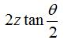
如下图中所示：
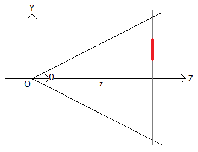
长度为L的线段（图中红色线段）相对于视野高度的比例为
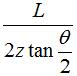
而该比例应该等于图片中线段的长度l比上图片的高度h。即

二维码的边长L是已知的，图片的高度h也是已知的。左边沿和右边沿在图片中的长度l1和l2可以通过识别出来的四个顶点坐标计算出来，而上下视角θ是个常数，可以通过测量得到。把左边沿的Z轴坐标记作z1，把右边沿的Z轴坐标记作z2，那么可以得到
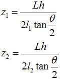
既然知道了左右边沿的z坐标，那么二维码中心点的z坐标就是其均值，即

好，接下来看俯视图：
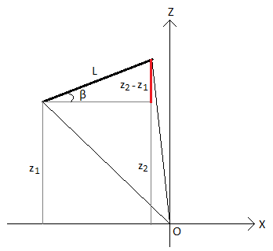
左右边沿z坐标之差比上二维码边长L，就是sinβ，其中β就是二维码的法向量与Z轴的夹角。如果规定二维码偏左（如图中这样）时β为负，否则为正，那么有
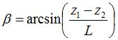
于是有了二维码的姿态信息β。
二维码的中心的z坐标z0有了，那么如果能够知道二维码的中心所在铅垂线与原点构成的平面和Z轴形成的夹角，那么二维码的中心所在的铅垂线就可以唯一确定了。由之前的研究我已经知道，如果能够得知某个点在图片上的2D坐标，那么我就能够得知该点在空间中的方向。那么如何得知二维码的中心点在图片中的坐标呢？
一开始我想到的是，在二维码的四个顶点中取两个对角点，取均值应该就是中心点的坐标。但是！这种想法是错误的！因为当二维码所在平面不垂直与成像平面时，线段的长度关系就会扭曲。不过，直线经过成像变换依旧是直线。那么二维码的两条对角线的交点就是二维码的中心点呀！所以思路就是：在图片上，计算两条对角线的直线方程，然后求交点的2D坐标，然后转换成空间中的方向！
假设四个顶点点分别为P0(x0,y0)、P1(x1,y1)、P2(x2,y2)和P3(x3,y3)，Zbar保证了它们的分别是图中的这四个点：
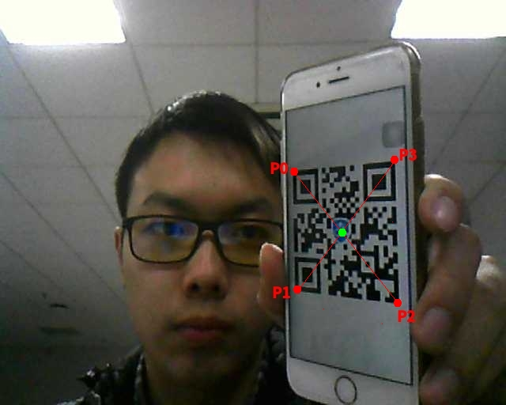
设直线P0P2的方程为

可以解得
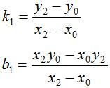
设直线P1P3的方程为
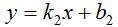
可以解得

而两条直线的交点的横坐标为

接下来看成像模型：
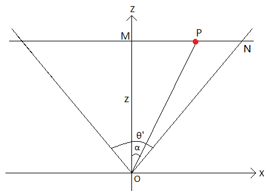
其中θ'是水平视角。在空间中，线段MP比上线段MN的比例为
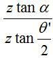
而在拍摄的图片上，该比例应该为
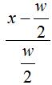
所以有
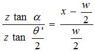
解得
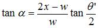
而水平视角的正切值和上下视角的正切值就是图像宽和高之比，即
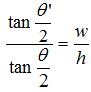
代入上式，解得
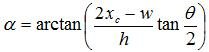
至此，α、β和z0都已经直接确定了。那么在上述两个假设下的二维码位姿信息就唯一确定了。
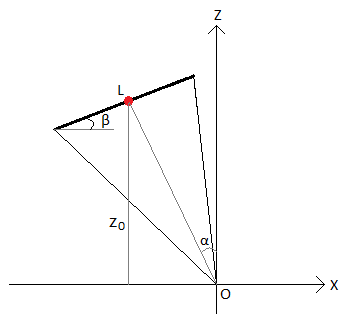
如果已经得知二维码自身在世界坐标系中的坐标和朝向，那么就可以通过α、β和z0得知小车自身在世界坐标系中的坐标和朝向。